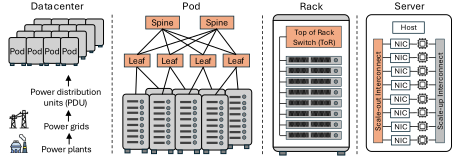

Physical Deployment Hierarchy and Scale-Up/Scale-Out Domains
Large-model execution engages every physical level of a datacenter at once, so it helps to have the levels straight before reasoning about any of them.

At the server level, accelerators are integrated with local communication resources. Racks and pods aggregate servers into progressively larger systems, and datacenter infrastructure supplies power delivery and thermal management. Computation and model state are distributed across devices, partitions exchange data over the interconnect fabrics, and facility-level power and cooling cap how much of the installed hardware can run at once.
The critical point for an architect is that these physical levels are not communication boundaries. A scale-up fabric may span multiple servers, multiple racks, or an entire pod. Two distinct ideas are therefore in play:
- A scale-up fabric tightly couples a group of accelerators — within a server, a rack or a pod — and is engineered for very high bandwidth and low latency.
- A scale-out network, usually Ethernet or InfiniBand, connects those groups across the broader cluster.
Because collective communication and model-parallel data movement are usually limited by intra-cluster efficiency, the scale-up fabric has a first-order effect on end-to-end training and inference performance. Typical tiers run from 4–8 accelerators at node scale, to 64–256 at rack scale, to 256–1024 at pod scale, with announced pod designs extending to 6K or 8K accelerators [1, 2].
References
- 1.Saurabh Dighe and Artour Levin. Deep Dive into the Maia 200 Architecture. https://techcommunity.microsoft.com/blog/azureinfrastructureblog/deep-dive-into-the-maia-200-architecture/4489312, 2026. Azure Infrastructure Blog. Published Jan. 26, 2026; updated Jan. 30, 2026.
- 2.Heng Liao et al. Ub-mesh: a hierarchically localized nd-fullmesh datacenter network architecture. IEEE Micro, 2025.